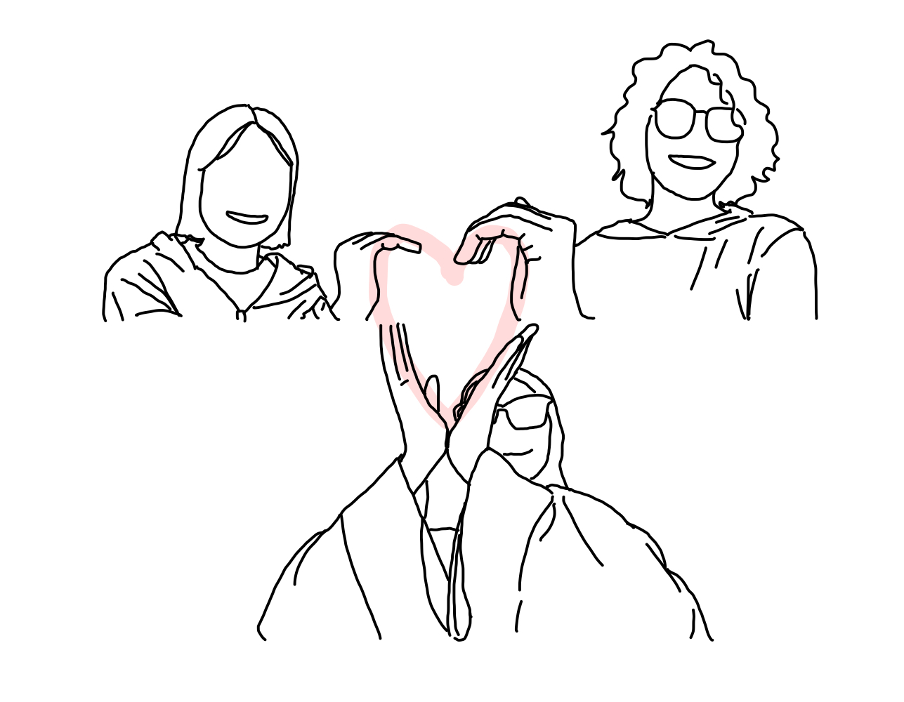

Procedures
1. Ideation
We first discussed about how to portray the main theme in terms of connection.
The major idea we came up with was to show the current status quo regarding
the pandemic and online classes.
2. Filming
Then, we started filming through Zoom, the online platform mainly used for taking online class.
We used the feature of Zoom screen recording.
3. Edit
Thais was in charge of clipping the recorded video file,
and Nouf provided the audio files used in the film.
Techniques
1. Visual
There is an element that continues when switching to another screen.
- Covering the screen and showing a different person
- Throwing and catching paper
- The heart at the end
2. Sound
The repetition of the sound file make the viewers immerse themselves in the film.
- "Hello!"
- "This is our video"
3. Story
Through various expressions that continuously allude to the main theme,
the film provides a hopeful message that we are all in this together,
and that we will soon return to the pre-COVID life.